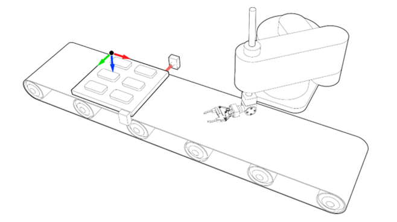
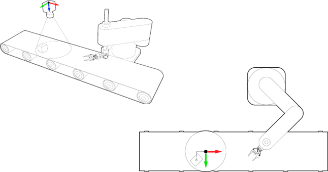

It is possible to synchronise the robot TCP with a moving object or with another machine or robot. This means the robot TCP will move or rotate in the same directions than the synchronised object and absolute movements on top of it.
There are two types of synchronisation:
1. Object frame synchronisation
2. GTA synchronisation
An object frame must be attached to at least an axis first before the robot can synchronise with.
|
|
|
SYNC_TO_OBJECT_FRAME(control, time[, object frame, GTA]) |
|
|
Parameters: |
|
|
control |
1 = Start synchronisation 4 = Stop synchronisation. 10 = Resynchronisation to another attached object frame |
|
time |
Time to complete the synchronisation in milliseconds. |
|
(optional) object frame |
Object frame already attached. Value = index or name of the object frame. Not needed for control 4 (Stop synchronisation). |
|
(optional) GTA |
GTA related to the object frame synchronised. Value = index or name of GTA, or -1 for no GTA. Not needed for control value 4 (Stop synchronisation). |
ATTACH_OBJECT_FRAME is a linking method between the vectors of an Object Frame and axes (up to 6) and placing it in a specific position. The object frame will then move along with the axes.
There are two different modes to attach an object frame; one specially designs to work with a conveyor and another one to work with a multipurpose machine.
|
ATTACH_OBJECT_FRAME(control, object frame, syncVector, syncPos, syncAxis) ATTACH_OBJECT_FRAME(control, object frame, axisX, axisY, axisZ, axisU, axisV, axisW, xOffset, yOffset, zOffset, uOffset, vOffset, wOffset) ATTACH_OBJECT_FRAME(object frame) |
|
|
Parameters: |
|
|
control |
ATTACH_OBJECT_FRAME mode. 1 = Attach object frame with a conveyor mode 2 = Attach object frame with multipurpose machine mode 4 = Detach object frame |
|
object frame |
Object Frame to attach. Value = index or name or the object frame. When used on its own, the command will return: TRUE = object frame specified is attached to a minimum of 1 axis FALSE = object frame specified is not attached to any axes |
|
syncVector |
Object Frame vector that will be attached to syncAxis. Values: 1 = x 2 = y 3 = z |
|
syncPos |
Captured position on syncAxis. |
|
syncAxis |
Axis to synchronise with. |
|
axisX, axisY, axisZ, axisU, axisV, axisW |
Machine axis number that corresponds to the Object Frame vector that will be attached. Set -1 for non-attached vectors. |
|
xOffset, yOffset, zOffset, uOffset, vOffset, wOffset |
Object Frame position and orientation relative to the origin of the Robot |
|
Examples: |
|
|
Example 1: Check if object frame “of2” is attached to any axes. ATTACH_OBJECT_FRAME( "of2" )
Example 2: Attach object frame “pallet’ to axis 11. See Attach Object Frame with a Conveyor section for more details. ATTACH_OBJECT_FRAME ( 1 , "pallet" , 1 , registed_position, 11 )
Example 3: Attach object frame 3 with along Y vector of axis 11 of a multipurpose machine. The x and z position is offset by 400mm and Y orientation is offset by 90 degrees. See Attach Object Frame with a Multipurpose Machine section for more details. ATTACH_OBJECT_FRAME (2, 3, -1, 11, -1, -1, -1, -1, 400, 0, 400, 0, 90, 0) |
|
An object frame must be created first before being attached or detached to axes.
As the conveyor can be in different orientations, the object frame can be set in multiple orientations to match the conveyor’s orientation. The selected object frame vector will follow the direction of the conveyor vector.
A common industry example is the picking of objects from a pallet and placing them onto another station or into a package. The synchronisation could be simplified by using Attach Object Frame technique. An Object Frame will be placed on the pallet in a specific position. All the objects will be taught relative to the Object Frame “pallet”. The Object Frame “pallet” will be attached to the conveyor using one of the three possible options: vector X, vector Y or vector Z. Bear in mind that the conveyor could not be perfectly aligned with the robot, so orientation data of the Object Frame could be used to adjust it.
ATTACH_OBJECT_FRAME(1, "pallet", 1, registed_position, 11)
After the command is executed, the Object Frame “pallet” will follow the conveyor precisely. At this state, the robot should be synchronised with the Object Frame “pallet”. Please, go to the next section to continue with the example.

For machines with more than one axis, it is possible to attach the position and orientation vectors with up to 6 axes changing the control parameter. If, for instance, an object frame is attached to a 6 DOF robot arm, the position and orientation of the object frame will follow the robot TCP.
ATTACH_OBJECT_FRAME(2, 3, -1, 11, -1, -1, -1, -1, 400, 0, 400, 0, 90, 0)
Use control mode 4 to detach an object frame from axes as shown in the example below.
ATTACH_OBJECT_FRAME(4, "of2")
After having attached the Object Frame onto the pallet, the robot has to be synchronised with the Object Frame and, in this particular case, placed over a specific object (GTA related to the Object Frame “pallet” previously taught).
SYNC_TO_OBJECT_FRAME(1, 1000, "pallet", "object_1")
Stop synchronisation within 250 ms.
SYNC_TO_OBJECT_FRAME(4, 250)
GTA synchronisation is designed for simpler synchronisations. It synchronises the robot TCP with one axis in X direction. If the robot is not aligned perfectly with X direction, Object Frame can always be previously set and selected.
|
SYNC_TO_GTA(control, time[, syncPos, syncAxis, object frame, GTA]) |
|
|
Parameters: |
|
|
control |
1 = Start synchronisation 4 = Stop synchronisation 10 = Resynchronisation to another GTA |
|
time |
Time to complete the synchronisation in milliseconds. |
|
(optional) syncPos |
Captured position on syncAxis. Not needed for control value 4 (Stop synchronisation). |
|
(optional) syncAxis |
Axis to synchronise with. Not needed for control value 4 (Stop synchronisation). |
|
(optional) object frame |
Object frame related to selected GTA. Value = index or name of the object frame, or 0 (default) for no Object Frame. Not needed for control value 4 (Stop synchronisation). |
|
(optional) GTA |
GTA to sync with. Value = index or name of GTA, or -1 for no GTA. Not needed for control value 4 (Stop synchronisation). |

Products are placed in a conveyor belt randomly. They are then to be picked and placed to a specific position. A camera vision system will process the position and orientation of the products and send this information to the controller. Depending on the camera technology used, the information can be sent using an Ethernet socket connection or Trio ActiveX. The offsets measured for the camera are relative to the camera origin and therefore we need to tell the system where that origin is using OBJECT_FRAME.
Bear in mind that the robot will be synced with X direction, so the X vector of the OBJECT_FRAME should be aligned with the direction of the conveyor. After setting the OBJECT_FRAME in the camera origin, a GTA should be set with the offset detected. In this example, the camera will send 5 parameters to a table data:
|
TABLE |
Contents |
|
0 |
X offset |
|
1 |
Y offset |
|
2 |
Orientation |
|
3 |
Conveyor position |
|
4 |
Detected flag |
fixed_z = 50 'Z will always be the same due to conveyor is
parallel to the ground
'Open gripper
OP(gripper, OFF)
SYNC_TO_GTA(4, 500) 'Desync in 500ms
WAIT UNTIL SYNC_CONTROL = 0 'Wait until fully desync
WAIT UNTIL TABLE(4) = 1 'Wait until product is detected
TABLE(4, 0) 'Reset product detected
'Set GTA value with camera measured offsets
GTA(0) = TABLE(0), TABLE(1), fixed_z, 180,0, TABLE(2)
'Register conveyor position when camera detects the product
registed_position = TABLE(3)
'Sync to axis 10, GTA(0) in Object Frame "camera" (1) in 2000 ms
SYNC_TO_GTA(1, 2000, registed_position, 10, 1, 0)
WAIT UNTIL SYNC_CONTROL = 3 'Wait until fully synced
'Close gripper
OP(gripper, ON)
WA(200) 'Wait for gripper close
SYNC_TO_GTA(4, 500) 'Desync in 500ms
WAIT UNTIL SYNC_CONTROL = 0 'Wait until fully desync
STOP
Stop synchronisation within 250 ms.
SYNC_TO_OBJECT_FRAME(4, 250)
To check if the robot is already being synchronised, use axis parameter SYNC_CONTROL.
When synchronised with Object Frame, specify the axis of the robot that has been synchronised.
When synchronised with GTA, the robot is synchronised to axis X and therefore it is not necessary to specify the robot axis.
|
SYNC_CONTROL |
|
|
Values: |
|
|
0 |
No synchronisation |
|
3 |
Synchronised |
Wait for axis 2 to be synchronised before picking a part.
WAIT UNTIL SYNC_CONTROL AXIS(2) = 3
GOSUB pick_part
Wait for robot to be synchronised.
WAIT UNTIL SYNC_CONTROL = 3